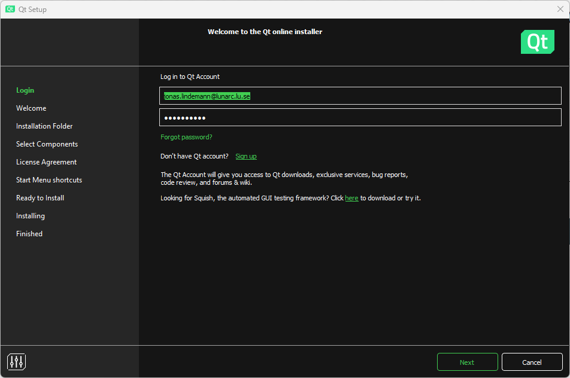

Building and running C++ code
To install and run C++, you will need a compiler. There are several compilers available for C++ that work on all major platforms. For this course, we will be using the GNU C++ compiler. Along with the compiler, it is recommended to have a good text editor that has support for C++. To further simplify the process of compiling, running, and debugging C++ code, a development environment is recommended. In this course, we will use Qt Creator, which is an advanced environment specifically designed for C++. It provides features such as building, debugging, and running both command line and graphical applications using Qt.
As we are not going to develop commercial code in this course we can download and use the open source version of Qt Creator, which can be downloaded from the following URL:
Download open source Qt Creator
Installing Qt Creator and C++ compiler (Windows)
Download and run the online installer from the URL above. To use the installer you need to create an Qt account. When this has been done, enter your account information into the following dialog box and click Next.

Check the box that you agree to the GPL license requirements. Click Next.

In the Select components section make sure to select:
- Qt 6.5.x
- Qt Creator 10.0.2
- Qt Creator 10.0.2 CDB Debugger support
- Debugging support for Windows
- MinGW 11.2.0 64-bit
Click Next.
Continue the dialog to complete the installation of Qt Creator on Windows. When completed you should now have the development environment Qt Creator and the GCC 11.2 compilers for C++ available. Qt Creator is now available in the start menu.
Installing Qt Creator and C++ compiler (Linux)
On Linux Qt Creator will use any installed compilers on the system, so make sure you have installed these before running the installer. This can be done using the following commands on an Ubuntu system:
sudo apt-get install build-essential
On Linux you also download the online installer using the previous link. The installer comes in the form of an executable script, which you need to run. To do this open a terminal and do the following commands on the downloaded file:
chmod +x qt-unified-linux-x64-4.6.0-online.run
./qt-unified-linux-x64-4.6.0-online.run
The installer works just as for the Windows version. Select the following options in the Select components page in the installer:
If you want Qt Creator to be available you will need to add the following to the system path in Linux:
export PATH=$HOME/Qt/[qt version]/gcc_64/bin:$HOME/Qt/Tools/QtCreator/bin:$PATH
Add this file in your .bash_profile in your home directory. Replace [qt version] with the installed Qt version.
Installing Qt Creator and C++ compiler (macOS)
TBD.
Creating a C++ project in Qt Creator
When you start Qt Creator for the first time the following window appears:

On the left side there are 6 main sections in the left toolbar.
- Welcome - Shows a start page for Qt Creator with shortcuts and example projects.
- Edit - Here you edit your files in your project. More on that in the following sections.
- Design - Used to edit user interfaces when a Qt user interface project is used.
- Debug - Debug mode used when debugging your project.
- Projects - Project configuration options.
- Help - Help on how to use Qt Creator.
To create a new project in Qt Creator select File/New project... from the menu or press [Ctrl]+[Shift]+N. This brings up a wizard for creating a new project.
First we need to select the project type. For the most part of this course we will only need a Plain C++ Application project. See below:

In the next page we need to specify the name and location of the new project.

Now we need to specify the build system used by this project. The choices are CMake and QMake. In this course we will focus on CMake for our projects, so keep the default choice.

In this step the compiler kit needs to be selected. If all goes well it should show a valid configuration. In the image below the MinGW compiler kit for Windows is preselected.
If you want to use version control this can be specified in the following step.
When the guide is completed we should end up with the following window in Qt Creator. The Projects pane will show the files in your project and the editor will show you the main application source file, main.cpp.

Building your application
To build the application select Build/Build Project "MyAppliction from the menu or click on the build button in the lower left toolbar:
Output from the build can be shown by clicking the 4 Compile output button in the lower part of the window. This brings up the log of the compiler output.
Any issues can also be shown by opening the issues pane using the 1 Issues button in the lower part of the window.

Double clicking a row in the issues pane will bring you to the corresponding line in the source code.
Running your application
Running your application in Qt Creator can be done using the play button in the lower left toolbar.

If your code has not been built it will be built before it is run. Output from your application is shown in the 3 Application output pane in the lower part of the window.-
Adding source files to your project
Adding files to your project is a 2 step process. First we create the files and save them in the project source directory. Select File/New file... in the menu. In the guide that comes up select a General/Empty file.

Save it as a file called myfunc.h in the project source directory. In the next step just click Finish. Qt Creator currently can't add files automatically to the CMakeLists.txt file, and it shows the following dialogue,
asking you if it should copy the filename to the clipboard. Answer Yes.
Next open the CMakeLists.txt file and add myfunc.h to the the add_executable(...) statement:
cmake_minimum_required(VERSION 3.5)
project(MyApplication LANGUAGES CXX)
set(CMAKE_CXX_STANDARD 17)
set(CMAKE_CXX_STANDARD_REQUIRED ON)
add_executable(MyApplication myfunc.h main.cpp)
install(TARGETS MyApplication
LIBRARY DESTINATION ${CMAKE_INSTALL_LIBDIR}
RUNTIME DESTINATION ${CMAKE_INSTALL_BINDIR}
)
Same procedure can be done to add a myfunc.cpp file. The final CMakeLists.txt should look like:
cmake_minimum_required(VERSION 3.5)
project(MyApplication LANGUAGES CXX)
set(CMAKE_CXX_STANDARD 17)
set(CMAKE_CXX_STANDARD_REQUIRED ON)
add_executable(MyApplication myfunc.h myfunc.cpp main.cpp)
install(TARGETS MyApplication
LIBRARY DESTINATION ${CMAKE_INSTALL_LIBDIR}
RUNTIME DESTINATION ${CMAKE_INSTALL_BINDIR}
)
Building on the command line
Building a C++ application from the command line can be done using the following commands:
This will compile and link the source files myfunc.h, myfunc.cpp and main.cpp, producing an executable myapp.
Running on the command line
Running the compiler executable on the command line can be done using the following command: